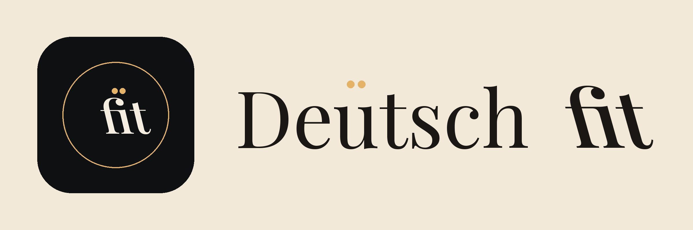
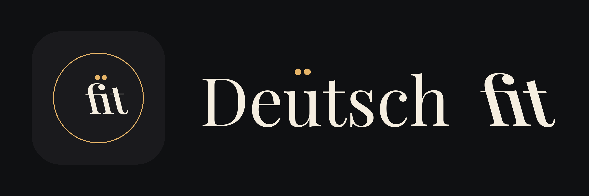

Legal & support
App
DeutschFit is a mobile app for learners preparing for German-language certification exams. The app is currently in closed beta on TestFlight (iOS) and Internal App Sharing (Android).


German-exam prep for Goethe, TELC, ÖSD, TestDaF & ECL.
DeutschFit is a mobile app for learners preparing for German-language certification exams. The app is currently in closed beta on TestFlight (iOS) and Internal App Sharing (Android).